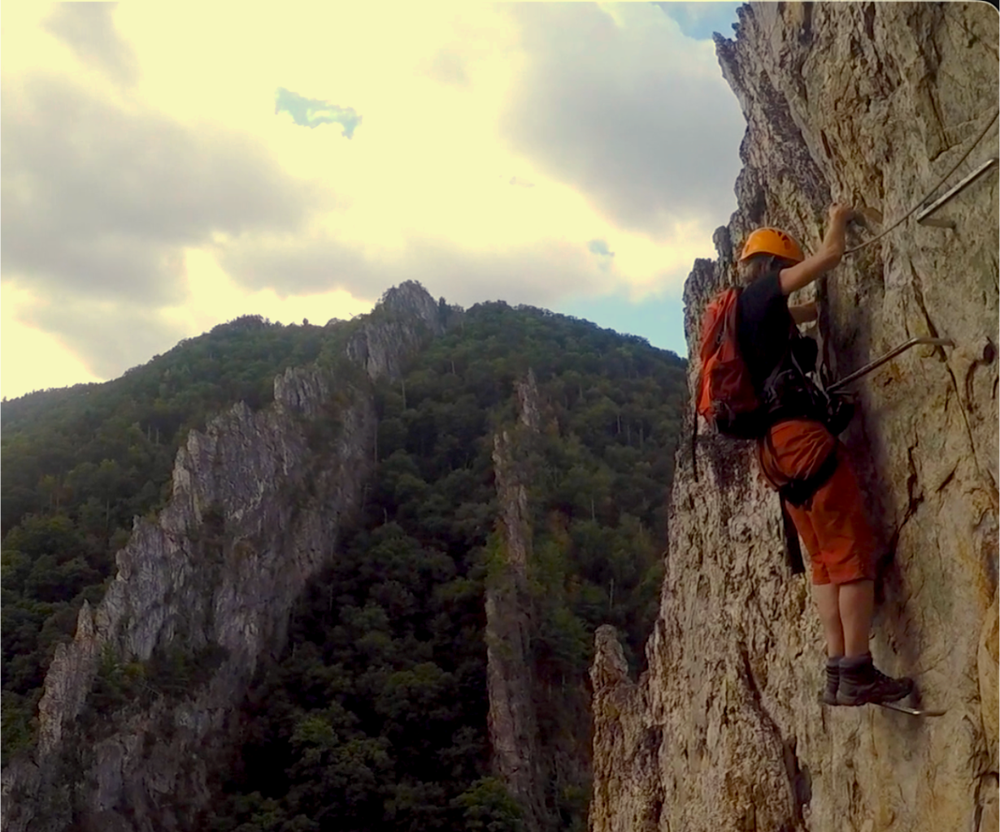
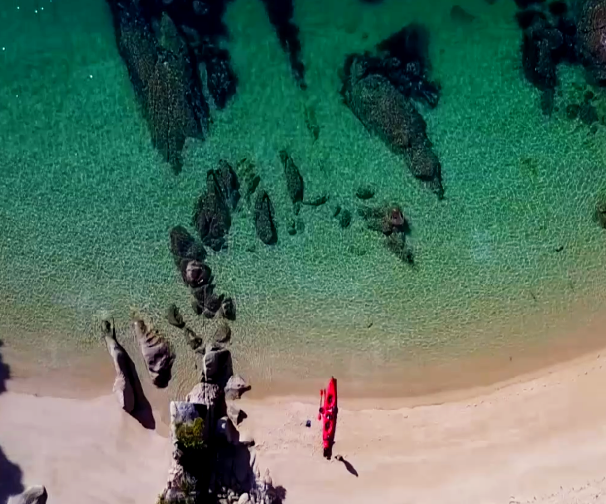
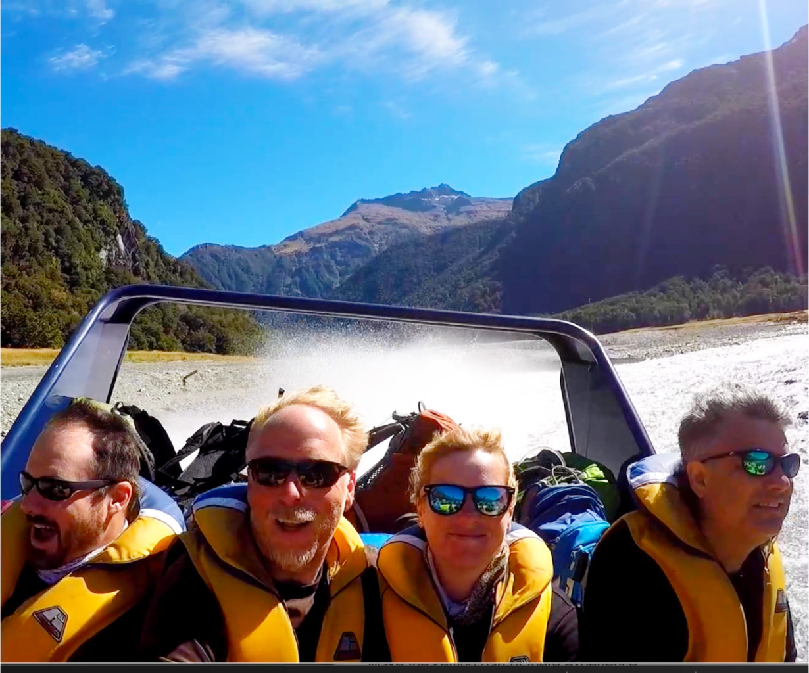
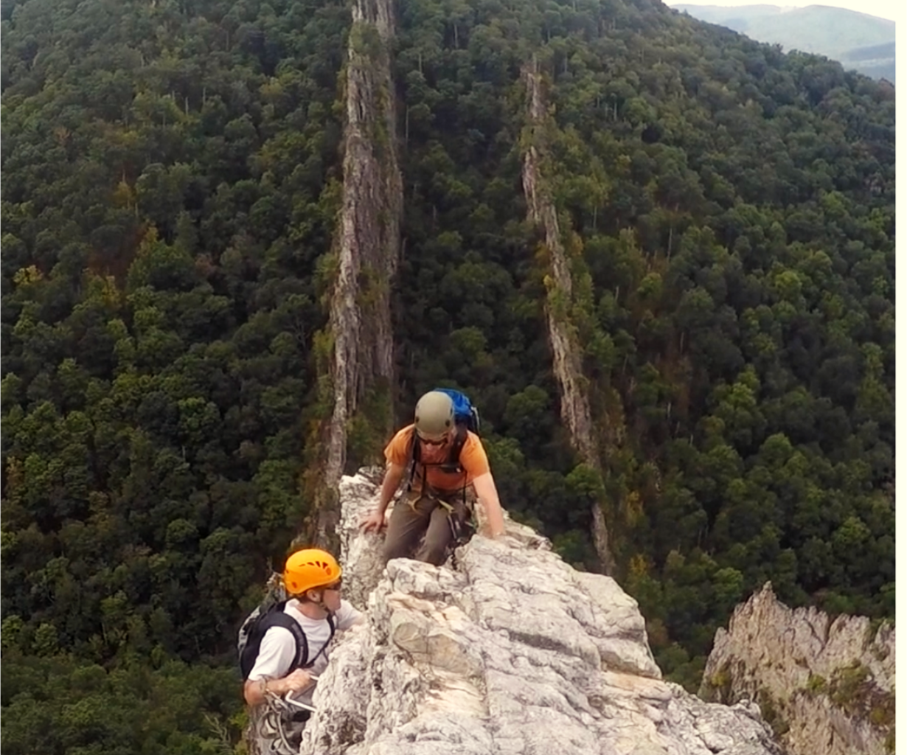
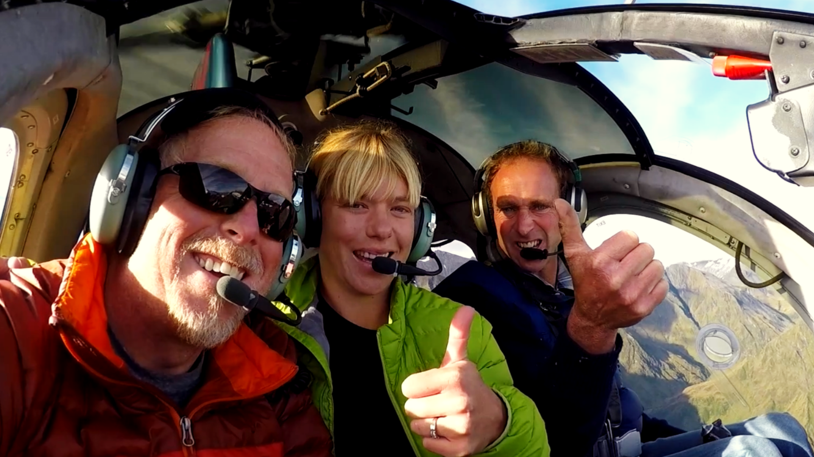

◯
The Experience
Putting the client in the adventure.
Show the adventure, the setting and the human moments that make someone want to be there.

Putting the client in the adventure.

Use the landscape and destination to help sell why this particular place matters.

Real reactions, guides and the small moments that make the experience feel authentic and attainable.

Show what makes your experience different enough that people will choose it over the alternatives.
Full-length 16:9 destination video telling the complete story of your destination.
Shorter edits designed for websites, campaigns and digital promotion across channels.
Purpose-shot short-form content built for social, including vertical footage where it makes sense.
Multi-Day Paddling & Camping
Multi-Day Kayaking & Camping
Helicopters, Hiking & Jet Boats!
Rafting, paddling, off-road tours, climbing, guided riding and wilderness trips.
Places where the activity and destination are sold together.
Ranches, campgrounds and other businesses built around an outdoor experience.
For 19 years, we've been riding, paddling, hiking, traveling and seeking out outdoor experiences ourselves. That first-hand perspective helps us recognize what makes an experience stand out — and what people need to see before they choose it.

Ask about reduced or waived travel costs for projects in areas we're already visiting.